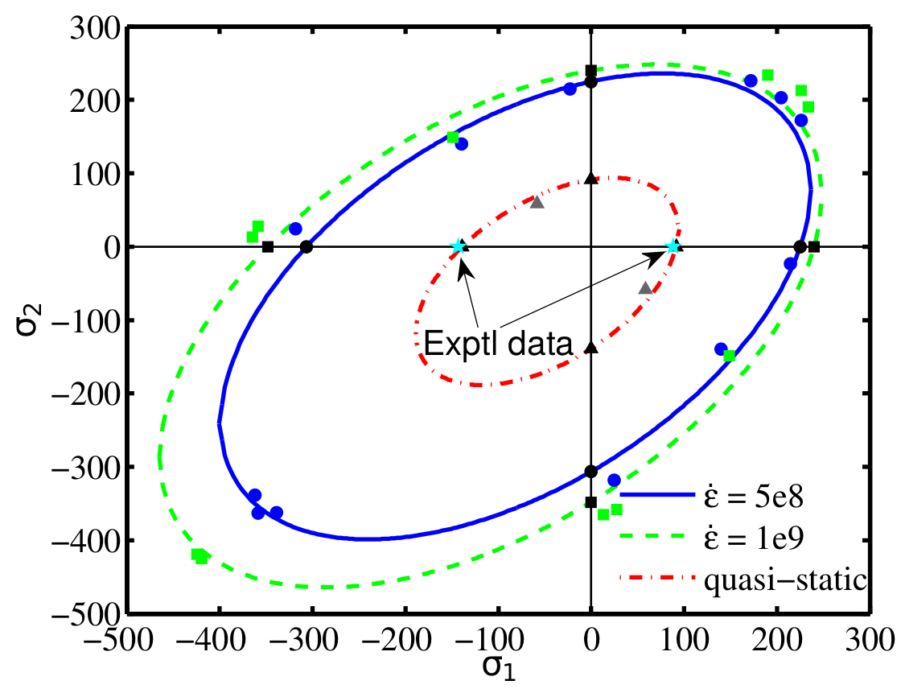
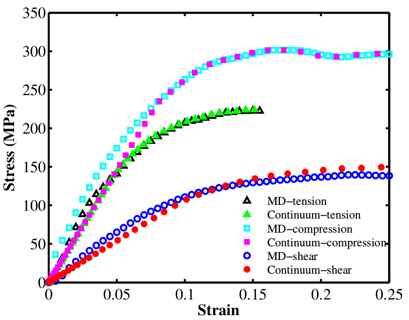

M.A.Bessa
Research Publications
Selected publications
Data-driven computational framework for the discovery of materials and structures
[Article in Computer Methods in Applied Mechanics and Engineering, 2017]
{kind=link}
General framework using machine learning to discover new models, materials and structures. The framework (optionally) includes our new reduced order model called "Self-consistent Clustering Analysis" (SCA), so that machine learning can be used to solve complex engineering problems (plasticity, damage, etc.).
New numerical method: Self-consistent clustering analysis
[Article in Computer Methods in Applied Mechanics and Engineering, 2016]
{kind=link}
One of the major challenges in applying machine learning for data-driven discovery of materials and structures was the computational time needed to generate high-fidelity data for complex phenomena such as plasticity and damage. This longstanding challenge is addressed by including our new method called "self-consistent clustering analysis" (SCA) in the new data-driven computational framework.
Other relevant work
Polymer physics: Atomistic to continuum prediction of the epoxy quasi-static thermo-plastic behavior
[Article in Macromolecules, 2015]
{kind=link}
Nano-kinking of the polymer chains is the mechanism that drives plasticity in highly cross-linked glassy polymers such as epoxies (see figure above). We wanted to find the quasi-static thermo-plastic behavior of a highly cross-linked epoxy material from molecular dynamics simulations. This is still an open area of research as molecular dynamics simulations are performed with strain-rates that are orders of magnitude larger than the ones occurring in macroscopic experiments. In this work, we proposed a simple yet powerful procedure to obtain the complete plastic behavior of these materials at macroscopic conditions for different temperatures by using the Argon theory introduced in 1972.
The figures below show (a) the yield surfaces obtained from molecular dynamics and the predicted quasi-static yield surface for the macro-continuum model; and (b) the tensile, compressive and shear stress-strain curves for the molecular dynamics simulations and the macro-continuum model.
{kind=link}
(a) Yield surfaces generated from Molecular Dynamics and predicted quasi-static yield surface
{kind=link}
(b) Macro-continuum and molecular dynamics tensile, compressive and shear stress-strain curves
Meshfree: Including peridynamics in the meshfree family
[Article in Computational Mechanics, 2014]
{kind=link}
In this article we unified different strong and weak form meshfree methods by deriving them from the equation shown above. Moreover, the state-based Peridynamics method introduced by Silling et al. in 2007 was also unified with the other meshfree methods such as the Reproducing Kernel Particle Method introduced by Liu et al. in 1995. A modification to Peridynamics for usage with non-uniform grids was also proposed.
Composites at micro-scale: High-fidelity micro-scale simulations
[Article in Composite Structures, 2015]
A new three-dimensional micromechanical model in great agreement with experimental data for different load cases. The video shows the first of its kind three-dimensional simulation of the most complex failure mode of a fiber-reinforced composite material: kink band formation due to longitudinal compressive loading.
Composites at macro-scale: Simulation of fracture of composite laminates
[Article in Mechanics of Materials, 2013]
Macroscopic fracture plane prediction by embedding the Smeared Crack Model proposed by Bazant et al. in 1988 with the cohesive damage law proposed by Camanho et al. in 2003. Good agreement with the experimental results for different off-axis compression tests of advanced composite laminates was achieved, as can be seen here.
{kind=link}
XFEM: weak to strong discontinuties transition
[Article in International Journal for Numerical Methods in Engineering, 2015]
{kind=link}
The eXtended Finite Element Method (XFEM) developed by Belytschko and co-workers in 1999 has been very successful in modeling different types of material discontinuities: cracks and interfaces. These discontinuities are treated differently by using two different enrichment functions. In this work we proposed a method to deal with the transition between these two discontinuities. This transition can occur in two directions: 1) from a material interface to a crack due to interface debonding; 2) from a crack to a material interface due to material healing.